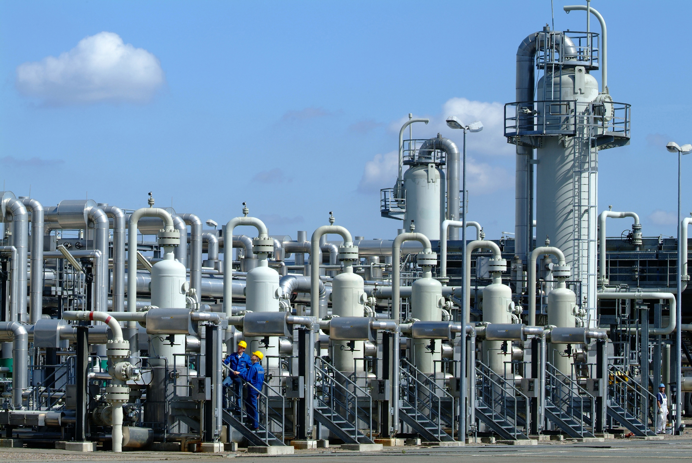
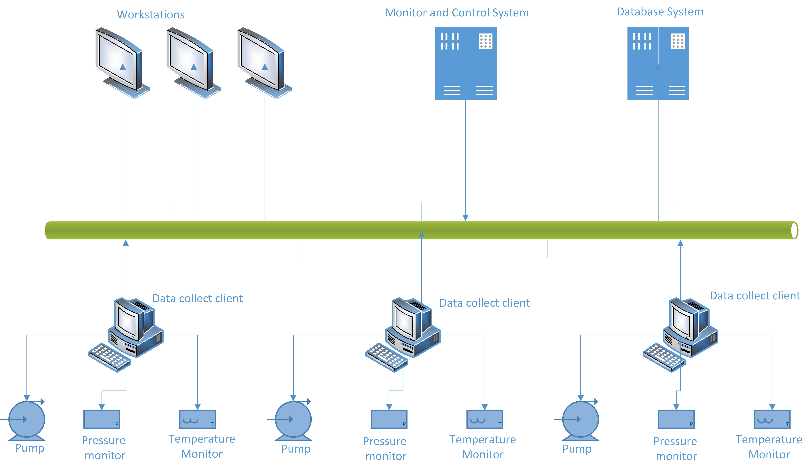

Fei Wang
(u5575182)
“
”This chapter introduce why I am interested in applying xtUML to chemical industry software.
After learning Model Driven Software Development, I strongly believe it could be used in chemical industry software development considering its following characters.
In the first place, the materials in chemical processing are inflammable, explosive, poisonous and harmful. All of the operations in chemical factories are based on chemical production software. However, staffs in chemical factory always feel confuse bout operating software system considering their background. They could understand the chemical process diagram very well (Show as diagram 1.1). And they have the knowledge about what may happen if temperature or pressure increase/decrease at a workshop section. As software engineers, if we develop a software for a chemical factory, how can we communicate technology details with them? How can we make them understanding software design? I think the class diagrams are the best tool to communicate software work flow and chemical process flow with chemical engineers. Classes in xtUML are an abstraction of identified real entities, such as a control point in chemical factory.
Diagram 1.1: Chemical Production Flow
Second, the operating conditions in chemical processing are high temperature, high pressure, continuous production and technology complex. And there are many uncertain risk factors which may cause accidents. So, the chemical production software is extremely complex. For example, there are thousands control points in a chemical workshop section. All of the control points must be under control of the software, or else, dangerous events will be happened.
Diagram 1.2: Real Control Points in Chemical Production  In traditional way, chemical software structure likes the diagram 1.3.
Diagram 1.3: Chemical Production Software Structure  Data collectors collect control points' data and write them to database. Control center reads data from database, analyses them and shows system state on user interface. That is all of the system states are hysteretic. It can't response to emergency event as quick as possible. What's more, software development, which is extremely complex, is facing data on database. The meaning of data understanding and careless mistakes will be a challenge for programs. Comparing with the traditional way, system designing and development in executable UML will be very intuitive considering all of the equipment and control points could be abstracted as domains and classes. The complexity of on-time interaction in chemical system will be simplified by calling external actions from other domains. And a state machine could clearly define activities of a control point.
In addition, with the development of chemical industry, a large-scale production system usually only requires a few people to manage the factory. Unlike other software, any mistake operation on the chemical software will case dangerous events. For example, some of accidents which lead to human and property losses are caused by wrong operation or un-reaching monitor. As a result, the staffs' operation skill training becomes increasingly important. What's more, with the production facility runs steadily for a long period of time, workers' ability of processing emergency event will be wan. Regular training is essential for those employees. So, chemial process simulation software must be provided by chemical production software provider. In executable UML, domain and interface can solve the issues very vell. Interfaces between abstracted entities and real entities clearly define the border of software and real equipment. Because of this character, components of software and hardware can be implemented individually in different domains. More than that, hardware could be imitated by software. It will be very helpful for the system mimetic. With the advantage of domain and interface, the production mode and training mode switch could be done easily and flexibly. And chemical reaction thermodynamics simulation could be done individually to satisfy simulation requirement.
“
”This chapter introduce some Basic Knowledge about oil distillation. This will be helpful for creating domain diagram, class diagram and state machine diagram.
In this portfolio, I will take the atmospheric oil distillation of atmospheric-vacuum chemical workshop section as an example to demonstrate the possibility of applying Model Driven technology to chemical industry software development.
In this demonstration, I only pay attention to atmosphere oil distillation tower (green color on the diagram 1.1, C-102).
After Electric desalting and forerunning, the oil was heated (F101) to 235 degree and pumped into atmosphere oil distillation tower. Due to different physical boiling points, different components in the hot oil will automatically fractionation in the atmospheric tower.
So, the temperature of different place within the distillation tower need to be controlled very precisely.
The pink tower (C-103) is rectification tower, where kerosene, diesel oil and wax oil will be rectified to produce high purity kerosene, diesel oil and wax oil.
Pumps P-109, P-110 and P-111 are work as temperature controller by pumping hot oil from tower C-102, energy exchanging and then pumping cold oil into tower C102.
Pump P-105 and P-110 also pump gasoline from 15th floor plate of tower C101 and top gasoline of tower C102 to balance the pressure of tower C102.
Pumps of P106, P107 and P108 remove related rectified oil from tower C103.
Besides pumps, there are temperature monitors TM4, TM14, TM22, TM25, TM34,TM 38, TM50 and TM52 etc. to monitor the temperature of their place.
Diagram 1.1: Chemical Production Flow
Domain:
One workshop section or a main production equipment can be abstracted as a domain.
The whole production system can be abstracted as below.
Diagram 3.1: Domains in chemical production system

Following Diagram 3.1, domains can be abstracted as diagram 3.1 a.
Diagram 3.1 a: Domain diagram of chemical production system

Take the Atmosphere Oil Distillation Tower as example (show in diagram 3.1 with yellow background),
The top Control point (P109) can be modeled as diagram 3.2.
Classes:
If apply the Model Driven Software Development in Chemical Production Software,
The core tasks are modeling monitors controllers and chemical on equipment of chemical production.
The way of modeling control point 109 shows as diagram 3.2.
Diagram 3.2: Classes of control point 109
 The temperature monitor T52 monitors the temperature of its position.
If the temperature higher than 130 degree, it will start the pump P109 to decrease its temperature by pumping out hot oil, exchanging heat, and pumping in cold oil with temperature 93 degree.
If the temperature lower than 130 degree, it will stop the pump P109.
(In real practice, it will be more complex. In this demo, I omit some details.
For example, if the temperature still higher than 130 degree since the pump have stopped,
T52 will send single to other related equipment to increase oil's temperature. )
The temperature monitor T52 monitors the temperature of its position.
If the temperature higher than 130 degree, it will start the pump P109 to decrease its temperature by pumping out hot oil, exchanging heat, and pumping in cold oil with temperature 93 degree.
If the temperature lower than 130 degree, it will stop the pump P109.
(In real practice, it will be more complex. In this demo, I omit some details.
For example, if the temperature still higher than 130 degree since the pump have stopped,
T52 will send single to other related equipment to increase oil's temperature. )
State Machine:
State Machine of T52 can be described as diagram 3.3.
Diagram 3.3: State Machine of Temperature Monitor T52

Until now, the design of Control Point 109 has finished. That's all. So easy!
Other Control Points can be down as the same as this. In this way, the chemical engineers can read the design, communicate with software engineers and suppose their opinions to improve the system.
Errors or misunderstanding about requirements could be found at software design phase.
Interface:
After that, a complier can translate the design diagrams to codes, which can be complied to final software product.
In practice, the communication between domain is implemented by interface, which separates connection between real entities or interface's implementations.
A benefit of interface in chemical production software is that all real equipments could be simulated by software under its interface.
In this way, the software can run as a simulation system to train staffs, and keeps same UI for users.
“
”For the basic knowledge, I write a study note, which includes Domain, Data Modelling, State Modelling, Process Modelling and Executable Specification.
Please find my Learning Note here.